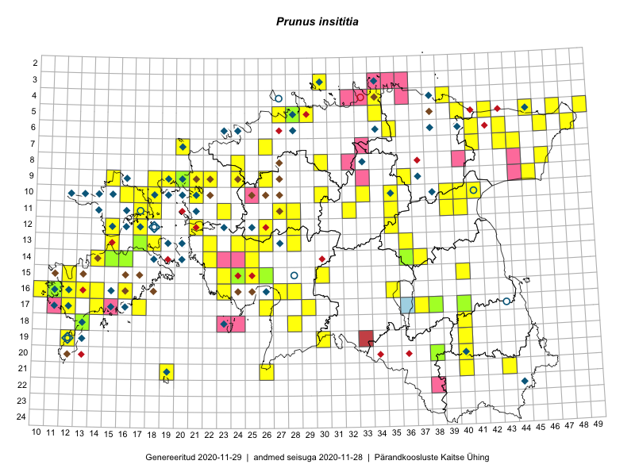

Prunus insititia
Uuendatud: 2016-12-02
Kaardile koondatud taksonid: Prunus domestica subsp. insititia (L.) Bonnier & Layens; Prunus insititia Jusl.

Kaart põhineb 148 vaatlusel. Taksonit on leitud 84 ruudust.
Kuvatud viited 20 esimesele andmebaasikirjele, ülejäänud PlutoFis
- Tiit Hallikma, Toomas Kukk, Indrek Tammekänd: 2015-06-09: 12-28: ala
- Tiit Hallikma, Toomas Kukk: 2015-06-09: 12-28: GPS punkt
- Peedu Saar, Liina Oja: 2015-05-22: 19-30: ala
- Peedu Saar, Liina Oja: 2015-05-22: 19-30: GPS punkt
- Peedu Saar, Liina Oja: 2015-05-20: 18-28: ala
- Peedu Saar, Liina Oja: 2015-05-20: 18-28: GPS punkt
- Toomas Kukk, Eerik Leibak: 2015-08-09: 14-15: ala
- Toomas Kukk, Thea Kull, Timo Luhamäe, Ott Luuk, Peedu Saar: 2015-06-28: 13-26: GPS punkt
- Toomas Kukk, Eerik Leibak: 2015-08-10: 13-15: GPS punkt
- Toomas Kukk, Eerik Leibak: 2015-08-10: 13-15: ala
- Toomas Kukk, Peedu Saar: 2014-09-24: 06-41: ala
- Peedu Saar, Toomas Kukk: 2015-05-26: 10-17: ala
- Tiit Hallikma, Indrek Tammekänd, Toomas Kukk: 2015-06-09: 12-28: GPS punkt
- Peedu Saar, Liina Oja: 2015-07-24: 09-45: GPS punkt
- Toomas Kukk, Raivo Kalle: 2015-05-14: 10-41: ala
- Toomas Kukk, Raivo Kalle: 2015-05-14: 10-41: GPS punkt
- Toomas Kukk, Raivo Kalle: 2015-05-12: 10-39: ala
- Toomas Kukk, Raivo Kalle: 2015-05-12: 10-40: ala
- Toomas Kukk, Raivo Kalle: 2015-05-12: 11-40: ala
- Toomas Kukk, Raivo Kalle: 2015-05-12: 10-39: GPS punkt